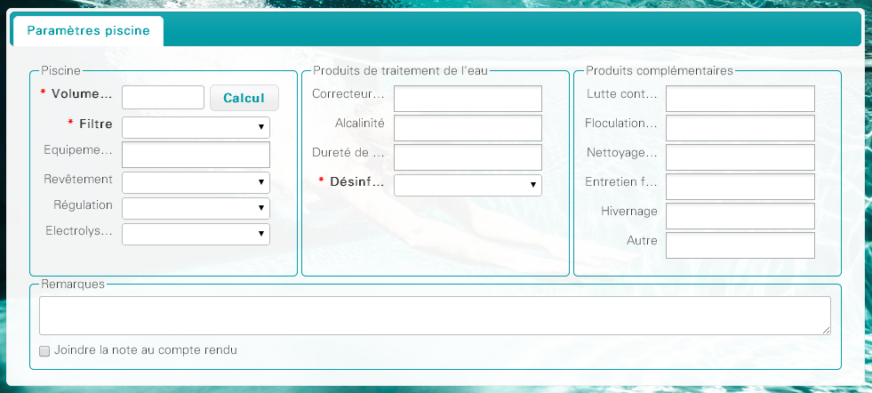
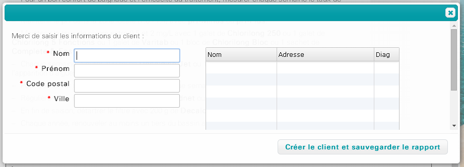

On peut créer un diagnostic depuis la page d'accueil en cliquant sur le bouton « Diagnostic » ou depuis le menu Fichier > Diagnostic .
Il est possible de faire un diagnostic sans choisir de client. Dans ce cas, il faut saisir les caractéristiques de la piscine.
Dans le cas où un client est sélectionné au préalable, les caractéristiques de sa piscine seront automatiquement remplies et seuls les produits utilisés pourront être modifiés.
Par défaut le mode d'analyse est « Vérification des paramètres » et aucune recommandation n'est cochée.
Selon le besoin, il est possible d'utiliser un autre mode d'analyse.
Les zones obligatoires sont indiqués en gras et marquées d'une petite étoile rouge (*).
Cliquer sur le bouton Rapport d'analyse pour générer le rapport. Si des champs obligatoires sont manquants, le logiciel affiche un message d'erreur et les champs à remplir sont indiqués en rouge.
Un aperçu du rapport est affiché au centre de l'écran.
Si le diagnostic est déjà lié à un client, le diagnostic est automatiquement lié à la fiche client lorsqu'on clique sur le bouton Fermer . La fiche client est alors affichée à l'écran.
Dans le cas où l'on clique sur le bouton Fermer sans avoir lié le diagnostic à un client, un message de confirmation est affiché. Si le rapport n'est pas sauvegardé (bouton Oui), ce rapport sera perdu.
Le bouton Sauvegarder permet de conserver le diagnostic effectué, même si le client n'a pas encore été enregistré dans le logiciel. Une fenêtre s'affiche et la saisie des informations du client est proposée.
Lors de la saisie du nom du client, une liste de clients similaires déjà existants est affichée dans le cadre de droite. En double-cliquant sur la ligne on peut associer le diagnostic à un client. Dans ce cas, le logiciel va contrôler les différences entre les caractéristiques de la piscine saisies sur la fiche client et sur le diagnostic.
Si des différences sont détectées, le logiciel affiche un message et propose de modifier la fiche client ou de relancer le diagnostic avec les informations de la fiche client.
Les modifications des produits utilisés dans le diagnostic ne sont répercutées sur la fiche client en ajout uniquement.
C'est-à-dire que si un produit est ajouté sur le diagnostic, il sera ajouté sur la fiche client mais si un produit est retiré dans le diagnostic, il ne sera pas supprimé de la fiche client.